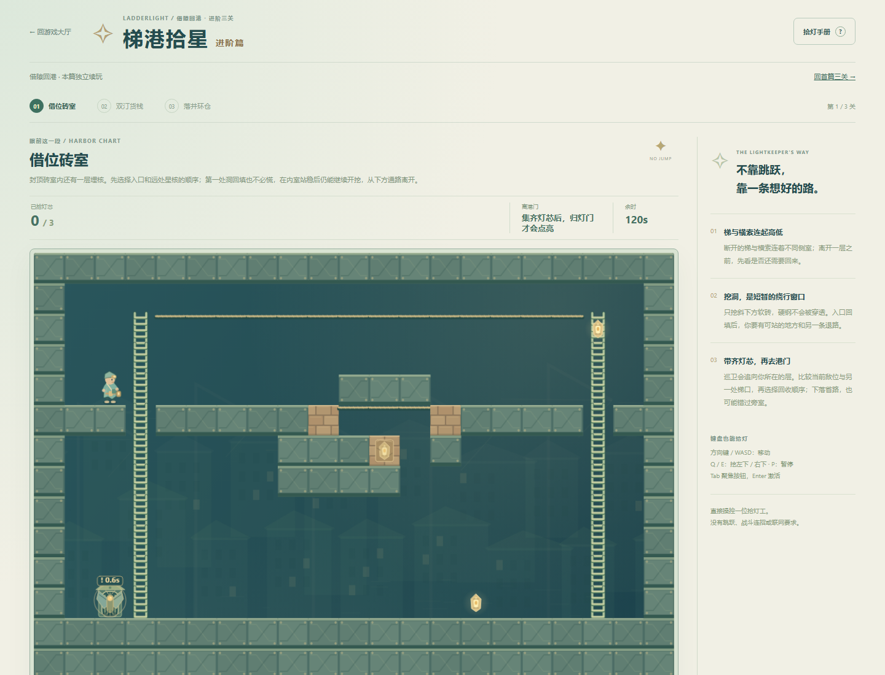
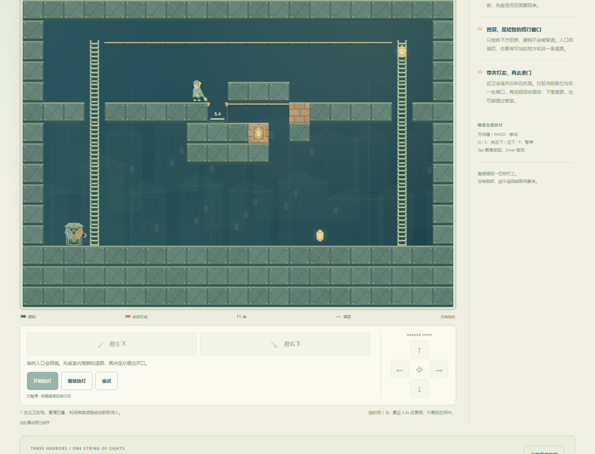
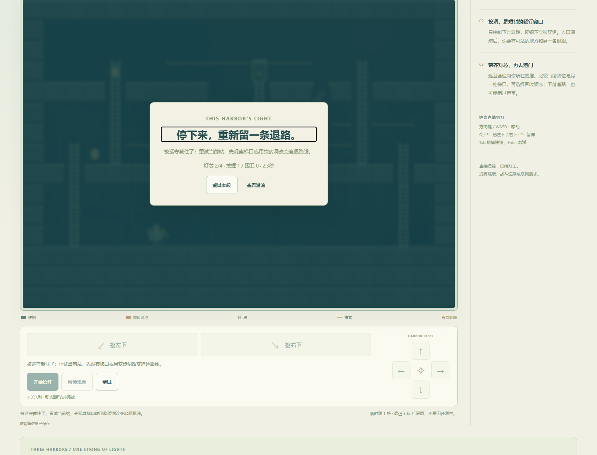
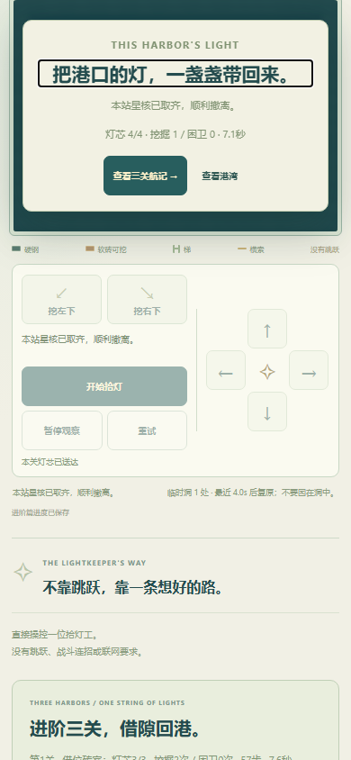
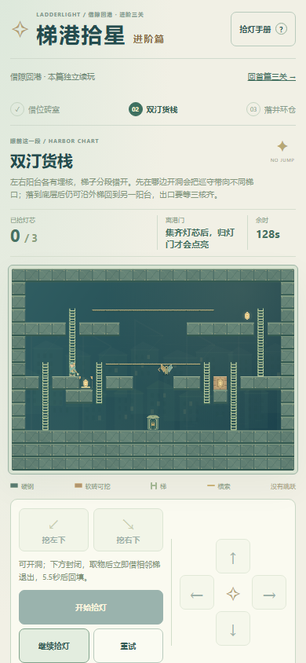

目录仍45项、72条图鉴不变。独立可选进阶篇，首篇三关与存档保留；其它44项和停止项目不动。21×15尺寸和基础速度/洞窗不变，每图3至4核；不靠拉长地图、加速或收集冗余充数。
第一图不读敌的几何策略可胜，7.54秒、2挖0陷，最近守卫1格；本图增量是两次开口的空间依赖与退路，不强称每条路都要困卫。静态native图显示三图均有无挖不可达的埋核，第一图一处开口仍取不到内核。
第二图初稿的近核盲策略5.54秒胜、最近敌距4，守卫作用不足。只把同一守卫从底层移到中层共用入口后，同一盲策略在50/100ms分别1.82/1.86秒被截。第三图独立初稿反例取两核后2.28秒被截；补短索后的作者最终模型反例2.32秒、普通UI2.30秒仍被截。阶段/证据来源分列，不把初稿测量冒称最终全覆盖。
盲策略是完全不读取敌字段的有限近核规划，最多考虑三处合法开洞；不是全局最优/穷尽求解，不能推导所有盲路线必败。主/替代建议含固定顺序、路点和实时敌距加权，不称预测AI。只换敌位的决策敏感性是明确夹具，非普通UI实玩。
Windows/Chromium147，原生键盘与按钮，依据只读当前敌位建议操作；没有注入位置、时间、胜负或完成档。第一图用普通P暂停核对开洞刷新，其余关未冻结规划。墙钟从开始按钮后采样，起点稍晚，含观测/暂停，不能与结算局内差额推算性能或真人反应。
| 图 | 实际取核顺序（ID） | 步 | 挖 / 陷 | 结算局内 | 辅助墙钟 |
|---|---|---|---|---|---|
| 1 | inner → low → high | 57 | 2 / 0 | 7.58s | 7.891s |
| 2 | high → right → left | 59 | 2 / 1 | 7.72s | 7.719s |
| 3 | upperLeft → middleLeft → lower → gate | 54 | 1 / 0 | 7.12s | 7.109s |
第一图先内室、后低层和高索；第二图采用高→右→左并实际困卫一次；第三图盲近核路线在2.30秒取两核后被截，刷新保持失利，确认只重试第三图、前两图不丢，再以左先行和侧环完成。完成档即时保留并刷新，航记与结果一致；新旅程取消保留、确认只重置进阶篇。首篇实际完成档字节未改，并能经普通链接重新打开首篇结局。
首次触控脚本把硬钢上的正确拒绝当成断言失败。保留该尝试，复用真实关间档，沿真实梯到软砖锚点后，原生touch按住/释放、取消、攀梯、挖掘与暂停通过；没有改规则或注入位置。390CSS为浏览器模拟，不是真手机。写失败/恢复、坏档保护为独立夹具，读失败只在单元测试。
18组成功（三图×两策略×50/100/200ms），完整20ms子步累计时间。两条合法非致死恢复：第一图1.12秒入内室，故意等入口回填到6.34秒后仍可继续，12.66秒胜；第二图取左核后1.38秒提前落底，沿错梯返回，6.50秒胜。等待仅用于恢复测试，不是流程门槛。
分级：有新增空间依赖、敌位风险和恢复机会的小型进阶候选。熟练辅助路线仍仅约7秒，不以时间、挖洞数或模型成功数宣称深度解决。真人无辅助趣味/难度、长期耐玩性、真实手机性能与审美未验。本作无音频；不追加第46项。
普通UI逐次决策 · 最终模型与恢复 · 独立反例与版本边界 · 明确决策夹具 · 两策略合法输入 · 实际旧档/新篇重开及故障夹具 · 旅程6组 · 目录/首篇默认入口兼容 · 实际关间档触控及进阶入口返回短验 · 规则与范围
模型可复跑：node docs/ladder-advanced-qa/model.test.mjs；旅程与目录脚本同目录。普通UI成绩和截图单列。




